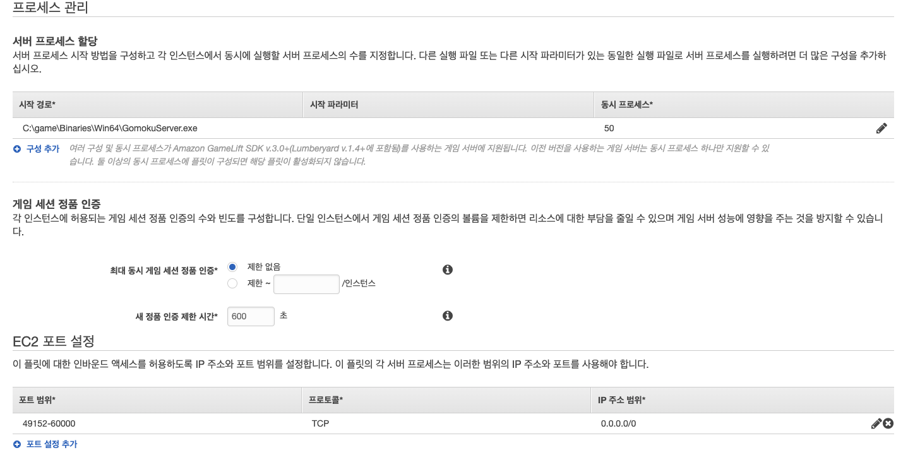

게임 서버 빌드 & 플릿 생성
GameLift 서비스와 함께 게임 서버 구축
이번에는 FlexMatch 를 이용하는 서버리스 기반의 서버 바이너리를 Gamelift 서비스와 함께 동작하도록 구성하는 작업을 시작하겠습니다. 마찬가지로 서버 바이너리는 컴파일 된 형태로 제공되었기 때문에 추가 작업이 필요하지는 않으며 직접 컴파일하여 생성한 바이너리를 소스 코드로 사용하실 수도 있습니다.
FlexMatch 기능을 서버 또는 클라이언트에 구현하면 별도의 매치메이커 서버 없이도 매칭 기능을 이용하실 수 있습니다. 기능을 위해 FlexMatch 기반의 바이너리는 실습을 위해 제공된 바이너리 루트 폴더에 bin/FlexMatch 하위의 GomokuServer 폴더를 사용합니다
-
이번 실습에는 이미 컴파일된 파일이 준비되어 있지만, 직접 컴파일 하고 싶으실 경우 Appendix 를 참조할 수 있습니다.
-
제공된 소스코드의 루트 폴더에서 bin/GomokuServer 폴더를 확인하시면 GomokuServer.exe, aws-cpp-sdk-*.dll, config.ini, install.bat, aws-cpp-sdk-gamelift-server.dll 등 파일을 확인하실 수 있습니다.
워크샵은 윈도우 서버 환경에서 vc_redist.x86.exe 파일의 설치를 요구합니다. 다음 링크를 통해 vc_redist.x86.exe 파일을 게임 서버 루트 경로에 위치시킵니다. 혹은 다음 링크를 통해 동작하는 Deployment 버전을 다운로드받으실 수도 있습니다.
-
텍스트 편집기를 통하여 config.ini 파일을 수정합니다. SQS_REGION는 SQS를 생성한 Region입니다. (예: ap-northeast-2). SQS_ENDPOINT 에는 게임 결과를 처리할 SQS의 Endpoint를 입력합니다.
-
ROLE_ARN은 섹션1에서 마지막으로 만들었던 GameLift Fleet을 위한 ROLE_ARN을 입력합니다. (아래의 스크린샷 처럼 따옴표 없이 입력해주세요. Role Arn은 Fleet 내부의 인스턴스에서 얻어 올 수도 있으나 현재 데모에서는 명시적으로 구성해 줍니다.)

-
Gamelift는업로드의 복잡성 때문에 현재 CLI를 통한 업로드 만을 지원합니다. AWS CLI 환경이 구성되어 있지 않다면 HoL 사전준비 를 참고해서 구성해줍니다.
-
GomokuServer 폴더에서 다음의 GameLift 업로드 명령어를 통해 빌드를 업로드 합니다. (GomokuServer 폴더 하위에는 Binaries 폴더와 install.bat 파일이 존재합니다)
aws gamelift upload-build --name "GomokuServer-Build-1" --build-version "1.0.0" --build-root . --region <Your Lab Region>
-
업로드할 때 실습 Region을 올바르게 설정하였는지 확인해야 합니다.
-
진행하는 중 콘솔의 GameLift 서비스로 가면 빌드가 업로드 되는 것을 확인할 수 있습니다. (https://console.aws.amazon.com/gamelift)
-
콘솔의 빌드 페이지에서 방금 업로드한 빌드를 선택합니다. Create fleet from build 버튼을 클릭합니다. 이를 통해 게임 서버의 fleet을 생성하게 됩니다.

- 다음의 정보를 입력합니다. 언급이 없는 부분은 기본값으로 진행합니다.
- Name: GomokuGameServerFleet-1
- Instance Type: C5.large
- Fleet type: Spot
- Instance Role ARN: 섹션1의 마지막에서 GameLift Fleet을 위해 만들었던 Role의 ARN (Gomoku-GameLiftFleetRole)
게임 실행 설정 (녹색 체크 버튼 확인)
- Launch path: Binaries\Win64\GomokuServer.exe (직접 컴파일 했다면 컴파일한 바이너리명)
- Concurrency Process : 50
네트워크 설정 (녹색 체크 버튼 확인)
- EC2 Port Setting : 49152-60000
- Protocol : TCP
- IP address range : 0.0.0.0/0

Fleet Type 을 Spot 으로 지정함으로써 GameLift 내에서 저렴한 가격으로 게임 서버 인스턴스를 호스팅하실 수 있습니다.
- 생성이 완료되면 상태창의 파란색 박스가 Active 상태의 녹색으로 변하며, 시간은 20분 정도 소요됩니다.

위의 그림은 서로 다른 버전으로 빌드된 예시이며 이해를 돕고자 추가된 그림입니다. 실습 환경에서는 똑같지 않을 수 있습니다.
-
Fleet 이 생성되는 동안 Alias 를 생성해보겠습니다.
-
메뉴에서 Create alias 옵션을 선택합니다. 그리고 Alias name과 Description을 입력해줍니다.
-
Routing options의 Type은 Simple을 선택하고, Associated fleet에서 [Select fleet]을 선택한 뒤 생성한 fleet을 선택합니다

플릿이 아직 생성되지 않은 상태여도 선택이 가능합니다. Alias 가 호출될 시 해당 호출은 연결된 플릿으로 전달됩니다.
- 실제로 GameLift Fleet 을 이용할 때에는 Alias ID 를 사용하게 됩니다. Alias 가 생성되면 해당 Alias ID 를 기억해둡니다.

기본적으로 240분 동안 아무 활동이 없다면 Fleet은 인스턴스 0개로 스케일-인 합니다. 이번 실습을 진행하는 동안에는 문제가 없지만 조금 더 오래 실행하고 싶다면 auto scale parameter를 최소한 1로 변경해야 합니다. 아니면 직접 1개의 인스턴스를 실행하도록 override해주어야 합니다.